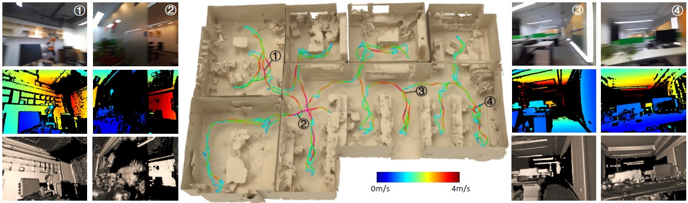
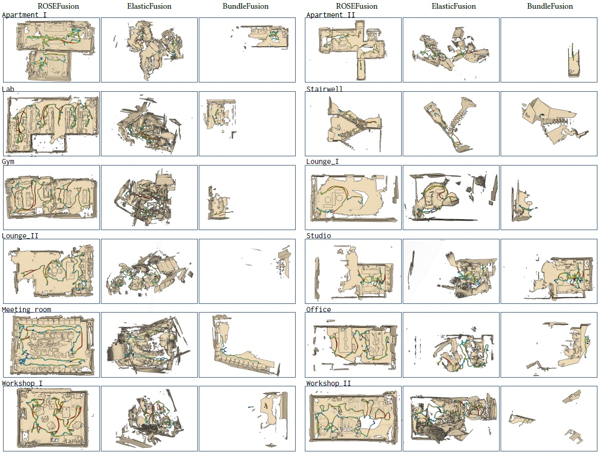
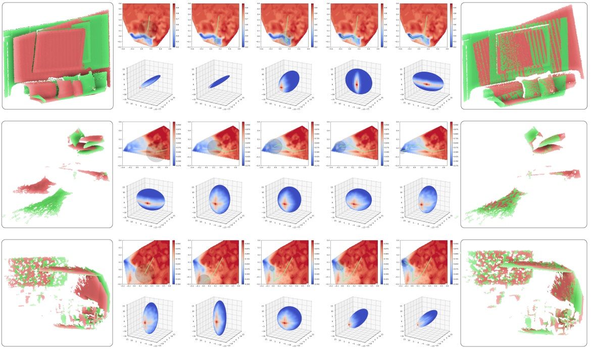
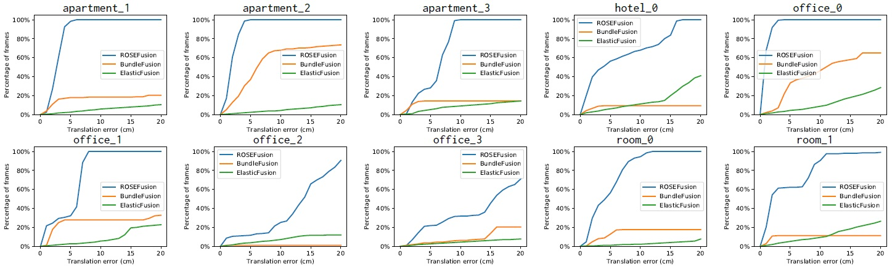

ROSEFusion: Random Optimization for Online Dense Reconstruction under Fast Camera Motion
Jiazhao Zhang, Chenyang Zhu, Lintao Zheng, Kai Xu
National University of Defense Technology
(Kai Xu is the corresponding author.)
ACM Transactions
on Graphics (SIGGRAPH 2021), 40(4).

We introduce ROSEFusion, a depth-only online dense reconstruction which is stable and robust to highly fast camera motion. Built upon the volumetric
depth fusion framework, our method solves the highly nonlinear optimization problem of fast-motion camera tracking using random optimization. In this
example, the depth camera moves at a speed of 2m/s in average and up to 3.6m/s, leading to severe motion blur in RGB images. This sequence would break
most state-of-the-art online reconstruction methods. Thanks to our novel particle filter optimization with swarm intelligence, our method is able to fuse the
depth maps (resilient to motion blur) accurately, attaining a satisfying reconstruction quality. See the planar walls and the correct overall layout; the imperfect
local geometry was mainly due to incomplete depth scanning. The tracked camera trajectory is visualized and color-coded with camera speed.
|
Abstract
|
Online reconstruction based on RGB-D sequences has thus far been restrained
to relatively slow camera motions (<1m/s). Under very fast camera
motion (e.g., 3m/s), the reconstruction can easily crumble even for the stateof-
the-art methods. Fast motion brings two challenges to depth fusion: 1)
the high nonlinearity of camera pose optimization due to large inter-frame
rotations and 2) the lack of reliably trackable features due to motion blur.We
propose to tackle the difficulties of fast-motion camera tracking in the absence
of inertial measurements using random optimization, in particular, the
Particle Filter Optimization (PFO). To surmount the computation-intensive
particle sampling and update in standard PFO, we propose to accelerate the
randomized search via updating a particle swarm template (PST). PST is
a set of particles pre-sampled uniformly within the unit sphere in the 6D space of camera pose. Through moving and rescaling the pre-sampled PST
guided by swarm intelligence, our method is able to drive tens of thousands
of particles to locate and cover a good local optimum extremely fast and
robustly. The particles, representing candidate poses, are evaluated with a
fitness function defined based on depth-model conformance. Therefore, our
method, being depth-only and correspondence-free, mitigates the motion
blur impediment as (ToF-based) depths are often resilient to motion blur.
Thanks to the efficient template-based particle set evolution and the effective
fitness function, our method attains good quality pose tracking under fast
camera motion (up to 4m/s) in a realtime framerate without including loop
closure or global pose optimization. Through extensive evaluations on public
datasets of RGB-D sequences, especially on a newly proposed benchmark of
fast camera motion, we demonstrate the significant advantage of our method
over the state of the arts.
|
|
|
Paper |
|
|
|
Slides |
|
|
|
| Images |

Gallery of 3D reconstruction results along with tracked camera trajectories for the twelve real captured fast-motion sequences of FastCaMo-Real. For
each sequence, we compare the results of ROSEFusion (left), ElasticFusion (middle) and BundleFusion (right). The linear velocity of camera movement is
color-coded (refer to Figure 1 for color bar) along the trajectories.

Visualization of pose optimization process on three representative frames selected from kt3 of ICL-NUIM, camera_shake_3 of ETH3D-CS and Lab of
FastCaMo-Real, respectively. In each row, we show two frames with initial poses, the evolution of PST during optimization, and the final alignment result. The
upper part of the evolution sequence shows the optimization landscape (colored plot) and the exploration path (green curve) of PST. The lower part shows the
evolution of the 6D PST visualized with a 3D ellipsoid.

Comparing percentage of frames under increasing tolerance of translation error of per-frame pose on ten sequences of our FastCaMo-Synth dataset.
Our method achieves significantly higher success rate of per-frame pose tracking than BundleFusion and ElasticFusion.
|
|
|
| Thanks |
We thank the anonymous reviewers for their valuable comments and suggestions. We are grateful to Yuefeng Xi and Yao Chen for
their effort in the preparation of the FastCaMo dataset. This work
was supported in part by National Key Research and Development
Program of China (2018AAA0102200), NSFC (61532003, 62002376)
and NUDT Research Grants (ZK19-30).
|
|
|
Code
Data |
|
|
|
| Bibtex |
@article
{zhang_sig20,
title = {ROSEFusion: Random Optimization for Online Dense Reconstruction
under Fast Camera Motion},
author
= {Jiazhao Zhang and Chenyang Zhu and Lintao Zheng and Kai Xu},
journal
= {ACM Transactions on Graphics (SIGGRAPH 2021)},
volume
= {40},
number
= {4},
year
= {2021}
}
|
 
|